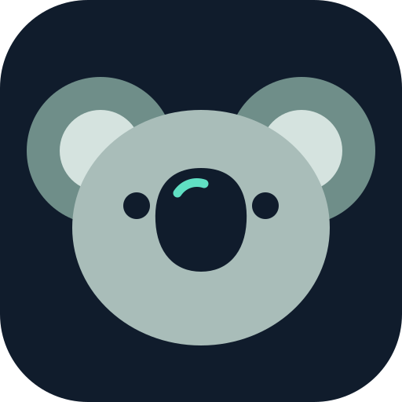
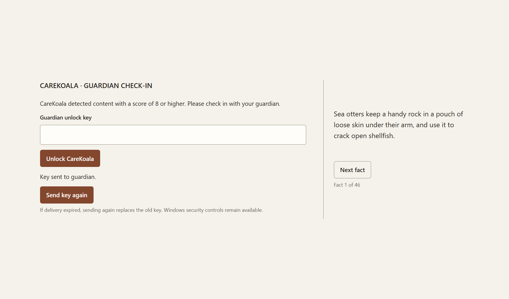

Windows
Windows 10 or 11, 64-bit.

CareKoalaCareKoala reads the screen of a Windows PC on that PC, and checks in with a trusted guardian’s phone when something looks harmful. Screenshots and messages never leave the computer.
Windows 10 or 11, 64-bit.
Android 8 or newer.
A small AI model on the PC gives the screen text a score from 0 to 10. The score decides what happens next.
Nothing is sent. CareKoala keeps reading, one screen at a time.
The guardian’s phone gets a check-in request.
The PC pauses behind a check-in screen until the guardian unlocks it.
A low score doesn’t prove a conversation is safe, and a high score can be a false alarm. CareKoala is a prompt to talk, not a diagnosis, and it is not an emergency service.

Both devices need internet access during pairing.
Open the installer you downloaded and follow it. If Windows says “Windows protected your PC”, choose More info, then Run anyway. Installing takes a few minutes.
Download the Android app, open the file, and allow your browser to install apps when Android asks. Then allow notifications.
On the PC, open Guardian and create a pairing invitation. On the phone, open Add person, then scan the QR or enter the code.
On the PC, verify the guardian name and select Approve guardian. Keys are exchanged automatically. Use the notification and lockdown tests to verify the connection.
Both apps come from this page rather than an app store, so your device may ask you to confirm.
No accounts, no cloud processing, and no analytics.
Messages pass through the free ntfy.sh relay. It sees when a message is sent and how big it is, never what it says. This website sets no cookies and loads nothing from other sites.
| CareKoala for Windows | CareKoala Guardian | |
|---|---|---|
| System | Windows 10 or 11, 64-bit | Android 8.0 or newer |
| Memory | 8 GB recommended | Any |
| Space | About 2.1 GB once installed | Under 1 MB |
| Internet | Only to send check-ins and receive unlocks | To receive check-ins and send unlocks |
| Also needs | Nothing else. The AI model and text recognition are included. | A screen lock, and notifications allowed |
Compare the SHA-256 checksum of the file you downloaded with the one below. If they differ, delete the file and download it again.
{{desktop.size}}, released {{desktop.date}}
{{desktop.sha256}}
To check it, open PowerShell in your Downloads folder and run:
Get-FileHash .\{{desktop.file}} -Algorithm SHA256
{{guardian.size}}, released {{guardian.date}}
{{guardian.sha256}}
The app’s signing certificate (SHA-256, for checking with apksigner):
{{guardian.certSha256}}
All checksums in one file: SHA256SUMS.txt. Machine-readable release details: release.json.
Released {{desktop.date}}.
No. Text recognition and the AI model both run on the PC. The only things that leave it are the encrypted check-in request and, when the PC pauses, an encrypted one-time unlock key for the guardian’s phone.
It carries its own AI model (about 800 MB), text recognition and the software they run on. That is what lets CareKoala work without sending anything to the cloud.
It covers every monitor and ignores the usual close keys, but it isn’t a lock. Ctrl+Alt+Delete and Windows security tools stay available on purpose:
The key can’t reach it. In Guardian, tap Reveal latest unlock key and read it to the person at the PC, who types it on the check-in screen.
No. The two apps pair with a private code that you move from the PC to the phone yourself.
Not yet. CareKoala runs on Windows PCs, and the guardian app runs on Android phones.
No. If someone is in immediate danger, call your local emergency number.